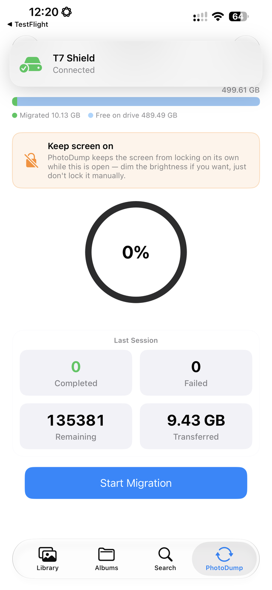
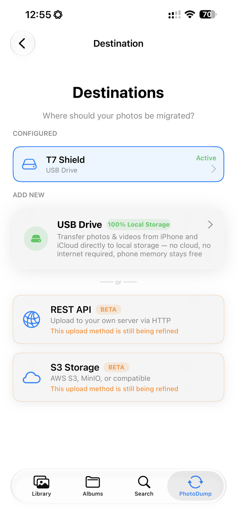
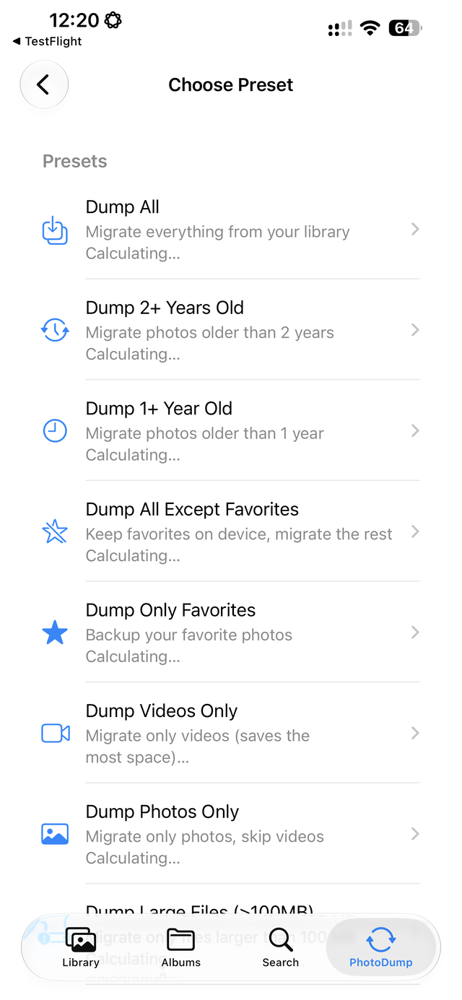
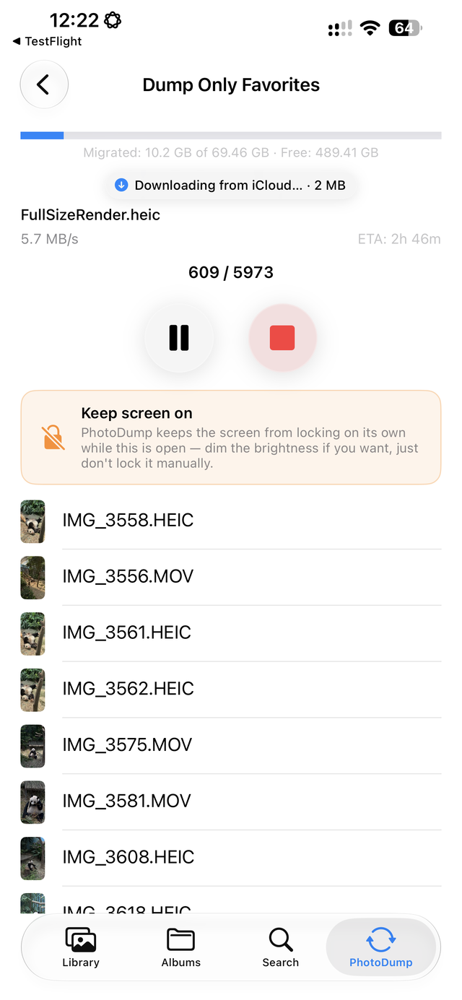
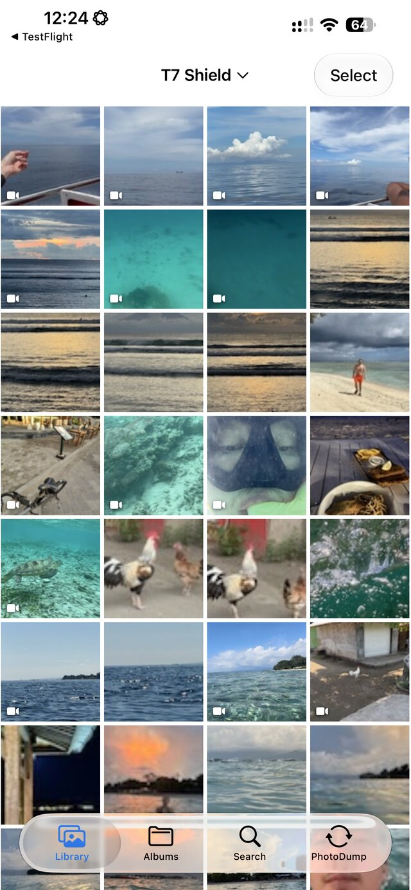
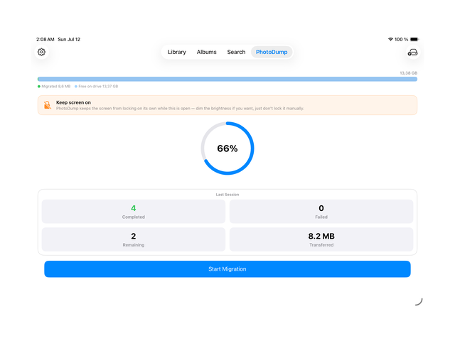
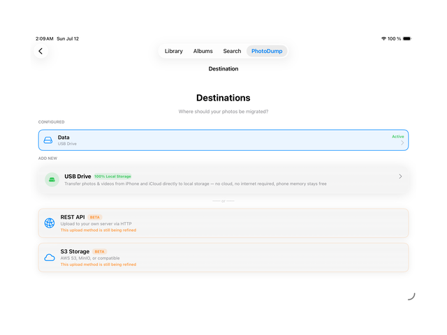
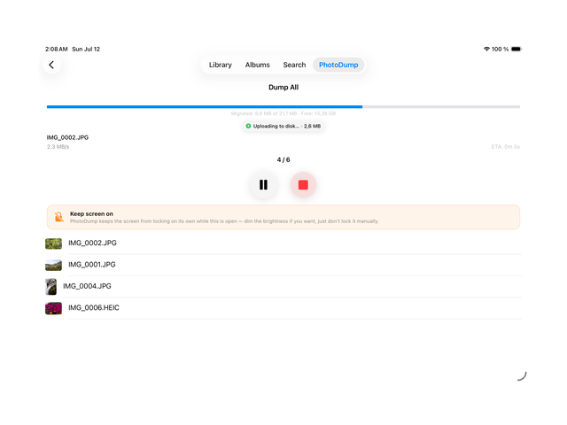
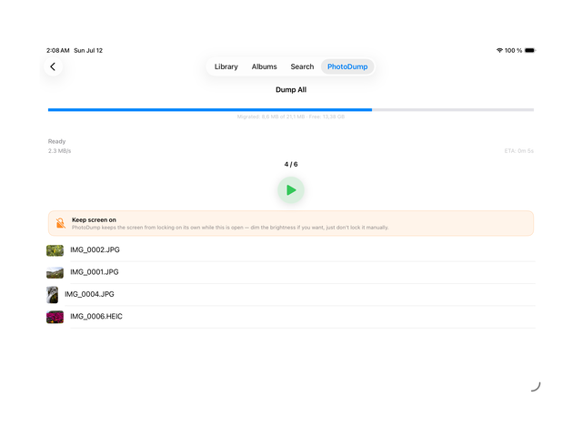

انقل صورك من هاتفك الآيفون، لا إلى سحابة مستأجرة
ينسخ PhotoDump Export App الصور ومقاطع الفيديو إلى محرك تملكه أنت — USB/SSD، أو S3، أو خادمك الخاص.
تخزين آيفون ممتلئ؟
انقل الصور ومقاطع الفيديو من الهاتف بدلًا من حذفها — لا يُوسَم أي ملف بأنه آمن للحذف حتى يُؤكَّد وجوده على المحرك.
سئمت من دفع تكاليف iCloud+؟
خطة 2 تيرابايت تكلف $9.99 شهريًا، إلى الأبد. انقل مكتبتك إلى محرك تملكه مرة واحدة، ثم خفّض الخطة أو ألغِها.
مكتبتك أكبر من سعة تخزين هاتفك؟
لا يزال بإمكان آيفون بسعة 256 جيجابايت نقل مكتبة بحجم 2 تيرابايت إلى SSD بحجم 2 تيرابايت — ملفًا تلو الآخر، دون احتواء كل شيء دفعة واحدة أبدًا.
تشغيل تخزينك الخاص بدلًا من مزود خدمة سحابية
يعمل دعم PhotoDump لتخزين S3 المتوافق وخوادم REST (تجريبي) مع جهاز NAS منزلي، أو مخزن كائنات مستضاف ذاتيًا، أو أي خادم تتحكم به بنفسك. لا يحتفظ PhotoDump نفسه بنسخة من أي شيء أبدًا — تنتقل الملفات مباشرة من هاتفك إلى الوجهة التي تحددها.








